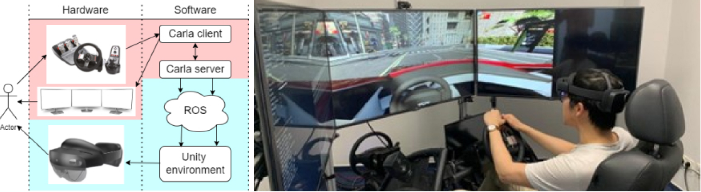

Enhancing Perception of Risk Objects for Car Drivers Through Augmented Reality Glasses
In complex driving scenarios, drivers often face the challenge of making quick decisions regarding the safety of crossing intersections or entering roundabouts. \ These decisions, prone to human error, can compromise road safety and driving efficiency. The recent advancements in augmented reality (AR) glasses hold significant potential for assisting drivers in avoiding such dangers. Unlike traditional AR heads-up displays (HUDs), AR glasses provide a larger field-of-view. While previous research has proposed various driving-assistance concepts using simulated displays, only a few have explored actual implementation or experimentation with real AR glasses. This study introduces a novel concept of visualizing risks through AR for driving assistance systems. We have designed and implemented two different interfaces specifically tailored for real AR glasses, integrating them into a driving simulator system. To evaluate the effectiveness of AR glasses in driving assistance, we plan to conduct experiments based on this platform in the future.
SYSTEM STRUCTURE AND APPARATUS
By combining the capabilities of the driving simulator and the HoloLens device, we aimed to create an immersive and interactive AR experience that could effectively visualize the risk areas in realtime.
AUGMENTED REALITY UI DESIGN
We consider traffic objects as point-like representations, and assume that they maintain their current velocity vectors. Using this information, we can determine the time in the future when the ego vehicle and another object will be closest to each other. This time can be calculated using the following formula:
Design 1: the red carpet
The visualization of this design consists of a red plane accompanied by two slightly elevated edges. To determine the length of the "carpet," it is calculated by multiplying the speed difference with the time taken to reach the minimal distance.
Design 2: the wall
A different concept presents the risk in a vertical direction. The "wall" consists of a collection of transparent blocks stacked together. The height of the wall is calculated according to the following formula:
Scenarios:
To assess the effectiveness of the AR visualization designs, we devised and implemented several scenarios including entering the roundabout or pedestrian jump into the road with the variations of velocity of the surrounding traffic participants.
Design 3: The ripple (patented)
Design 3 combined 1 and 2, creating a ripple effect.